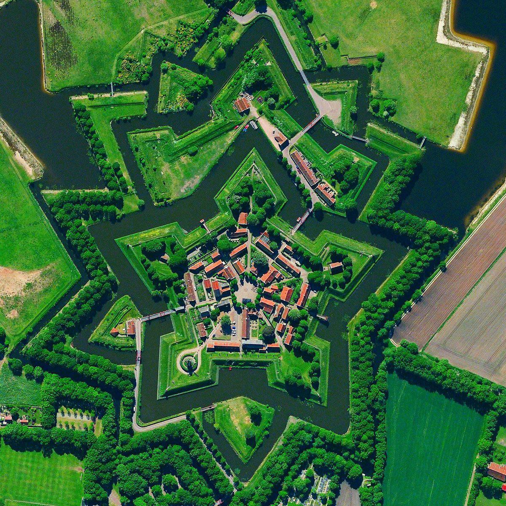

Reenacting or living history events usually take place in fields that used to be real battlefields centuries ago or inside castles and historical fortresses. They usually start on Friday evening or Saturday morning with groups marching through the city. People sleep in tents and cook outside as soldiers used to do during wars. Spectators can come and see what it looked like. They can walk through the camp and ask questions.
When the time of battle comes groups gather in one line and march together to the battlefield. Spectators are standing around and waiting for the beginning. Captains of groups meet in the middle and discuss conditions. After this battle starts. During renaissance battles and battles settled in later times battles start with several shots from historical weapons, such as various guns and canons. Then infantry makes the first steps and contact fighting begins. During battles is shooting switching with contact fights several times until one of the opponents falls.

Castle Tata, Hungary
Battles finish with groups marching around the battlefield and sometimes through the city as well. People are cheering and reenactors are returning to their tents.
There are music bands playing the Instruments typical in the time in which the event is lead. There might be various fire shows in the evening as well. People usually can taste food typical for those times.

Bourtange, Netherlands
.png)